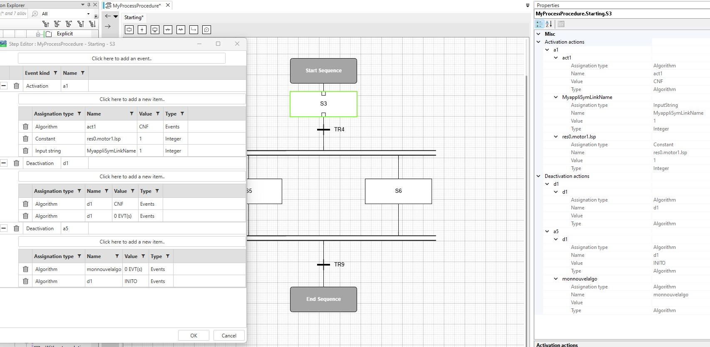

Double-click on a step (outside the label) to open the Step Editor (+ screenshot Step Editor open).
Add a new action by clicking top button. Select the event type (activation /deactivation) and provide a name.
To remove an action click on bin button in front of the action name.
Add a a new item in an action by clicking button Add new item. Select the right assignation type and refer to item configuration.
To remove an item click on bin button in front of the item.
In case of error, the row border turns red. Hover the row and read the message. The message varies depending of the type of error (“No match found between Symlinks value and type”, “The field can not be empty” ...).
Item configuration:
Constant symlinks : provides the complete path of the symlink you want to trigger . set the value to send. set the type of the value according to your symlink type. .
Input strings: select the symlink name from the list of input parameters provided (If the list is empty , it means you need first to update the interface of the CAT with a input parameter of type string to be able to pass the value). Set the value to send. Sset the type of the value according to your symlink type.